20241011: AI在國小教學的應用(一)
Table of Contents


1. 研習內容
- 研習對象: 國小各科教師
- 研習時間: 113年10月11日（星期五）14:00-15:30
- 研習地點: 高雄市信義國小
2. 目標
- 介紹AI技術在教育中的應用，並討論如何將AI融入高中課程和教學設計中。
- 幫助國小教師了解AI技術的潛力，並探索具體的應用案例。
- 提供實用的策略和工具，讓教師能夠在課堂中有效地整合AI。
3. 前言
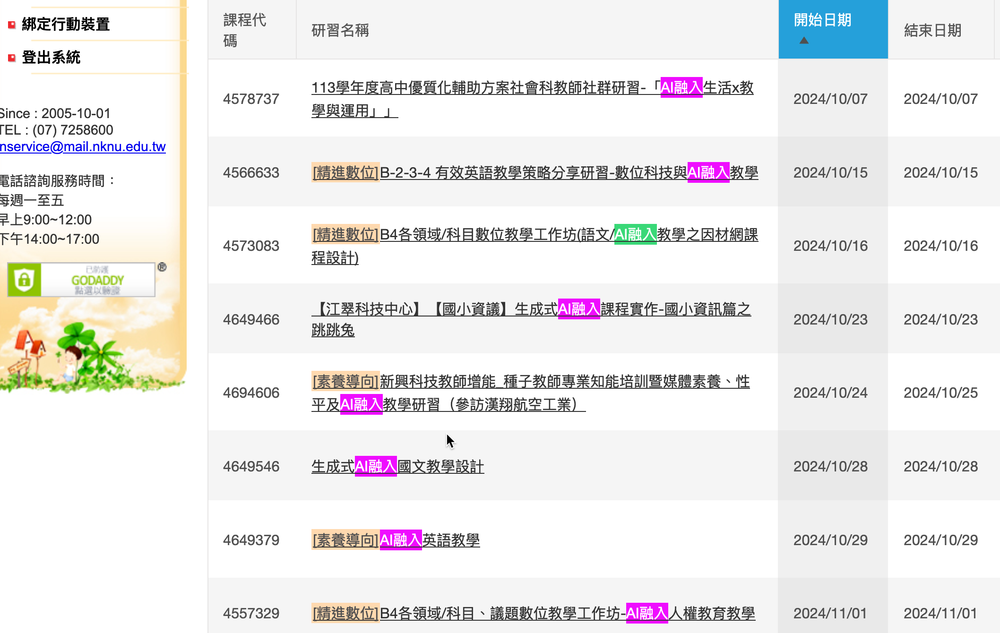
- 0903我去講了一個主題:AI融入領域課程及教學設計，當時看到這個主題，我有一種回到20年前的錯覺，那時我的老闆(師大何榮桂老師)有兩大研究領域(電腦化測驗和資訊教育)，碩班期間也跟著做了一些資訊科技融入教學的研究，沒想到二十年後，又接觸到類似的主題
- 若說 2023 年是生成式 AI 的爆發年，2024 即是生成式 AI 的穩定發展年，到了這個階段 AI 融入教學的重點不再是「『認識』生成式 AI 延伸有哪些功能、工具」，而是「『理解』生成式 AI 在教學生態系中能扮演什麼樣的角色」，才能進一步推展到「『應用』生成式 AI 在個別變數的課堂情境」的思維。1
- 目前能做到什麼程度
- 個人化教學: Math problems with GPT-4o, 看到這段我感概萬千，我的小孩出生的太早了，自己的小孩最難教，最難得的是，當chatgpt發現你在說話時她會立刻停下來聽完你的問題，即便當時她正在說話。
- 個人化教學: Math problems with GPT-4o, 看到這段我感概萬千，我的小孩出生的太早了，自己的小孩最難教，最難得的是，當chatgpt發現你在說話時她會立刻停下來聽完你的問題，即便當時她正在說話。
4. 國小AI教科書
4.1. 《和AI做朋友 - 人工智慧有意思》
由教育部編輯，目的是讓國小學生對人工智慧產生興趣，培養基礎科技素養。
教材的內容涵蓋了人工智慧的應用，例如語音辨識、影像辨識等，幫助學生理解AI在生活中的作用。
4.2. 可以補充的實作體驗資源
- Teachable Machine
- https://teachablemachine.withgoogle.com/
- 由 Google 開發的一個免費且簡單易用的工具，旨在讓任何人都可以輕鬆訓練機器學習模型，而無需具備編程或技術知識。
- 它的主要特色是通過一個互動式的網頁介面，讓用戶能夠創建圖像分類、聲音識別及姿勢檢測等機器學習模型。
- https://teachablemachine.withgoogle.com/
- Runway ML
- https://runwayml.com/
- 一個視覺化的機器學習平台，允許用戶無需編碼即可使用預訓練的模型，進行影像、影片和音訊的創意項目。
- https://runwayml.com/
- Lobe
- https://www.lobe.ai/
- 微軟推出的免費應用程式，讓用戶透過簡單的拖放介面訓練機器學習模型，主要針對圖像分類。
Introducing Lobe | Build your first machine learning model in ten minutes.
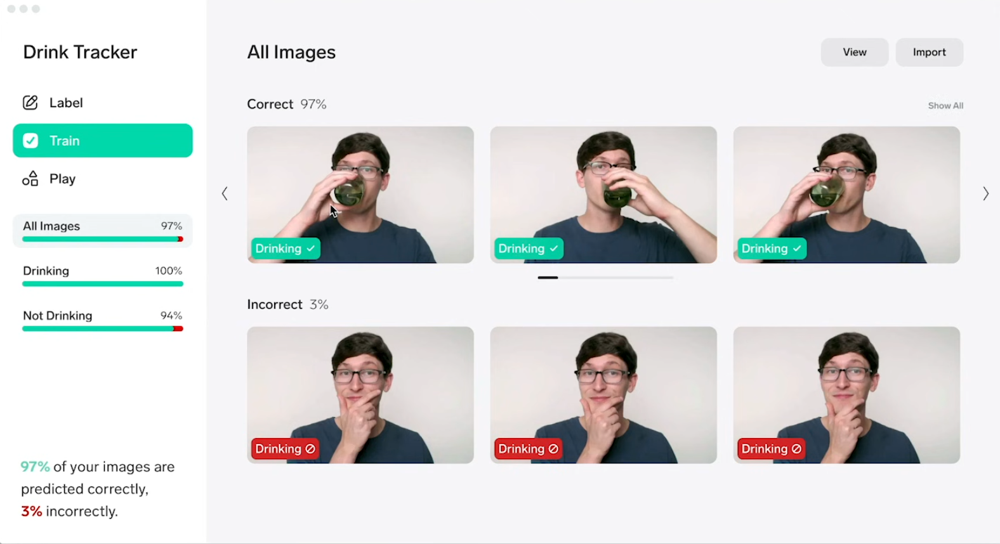
- https://www.lobe.ai/
- TensorFlow Playground:
- http://playground.tensorflow.org/
- 一個互動式的網頁工具，讓用戶可視化並理解神經網路的運作方式，適合想深入了解機器學習原理的初學者。
- http://playground.tensorflow.org/
- CNN Explainer:
- https://poloclub.github.io/cnn-explainer/
- CNN Explainer 是一個互動式的網頁工具，旨在幫助用戶理解卷積神經網絡（Convolutional Neural Networks，CNN）的工作原理。該網站通過可視化和直觀的交互介面，展示了 CNN 的核心組件，如卷積層、池化層和激活函數等。在這個平台上，用戶可以：
- 觀察數據流：了解輸入圖像如何通過各個網絡層逐步處理。
- 調整參數：修改網絡結構和參數，觀察這些改變對輸出結果的影響。
- 學習概念：獲取關於 CNN 基本概念的簡明解釋，加深對深度學習的理解。
- 觀察數據流：了解輸入圖像如何通過各個網絡層逐步處理。
- https://poloclub.github.io/cnn-explainer/
- AI Experiments by Google
5. 現況與教師態度
5.1. 現況
5.2. AI chatbots in schools: Findings from a poll of K-12 teachers, students, parents, and college undergraduates - Nickolas Bagley (202405)
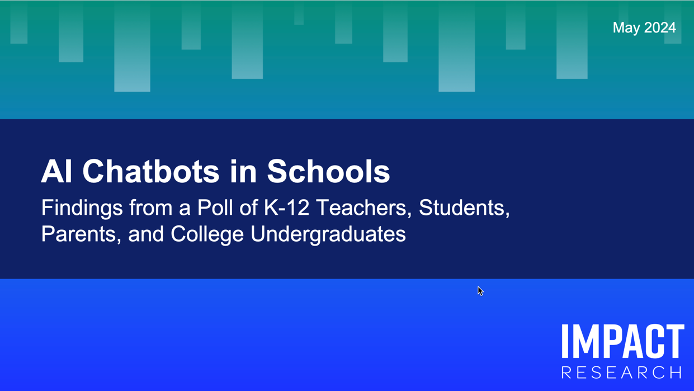
5.2.1. 重點4:
- 多數受訪者(老師、學生、家長)認為AI對個人有正面影響，那些少用的人則對AI抱持負面態度(尤其是教師)
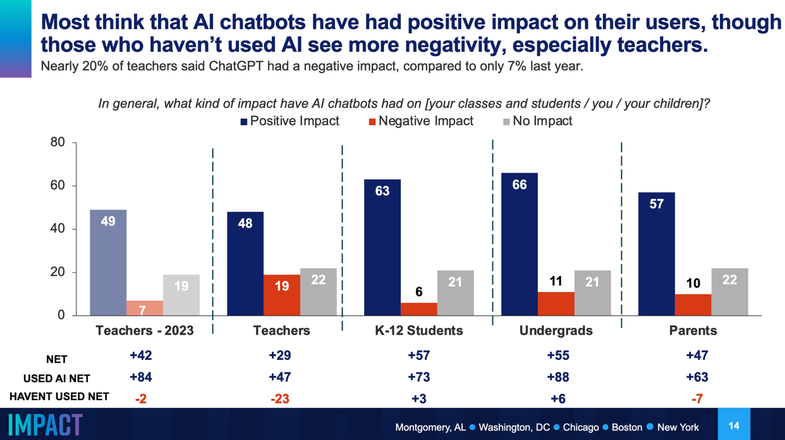
- 老師教授的年級越高、越傾向鼓勵學生使用AI
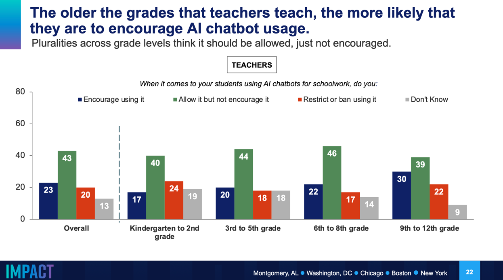
- 教師相信學生在未獲得教師允許下使用ChatGPT的比例逐漸提高
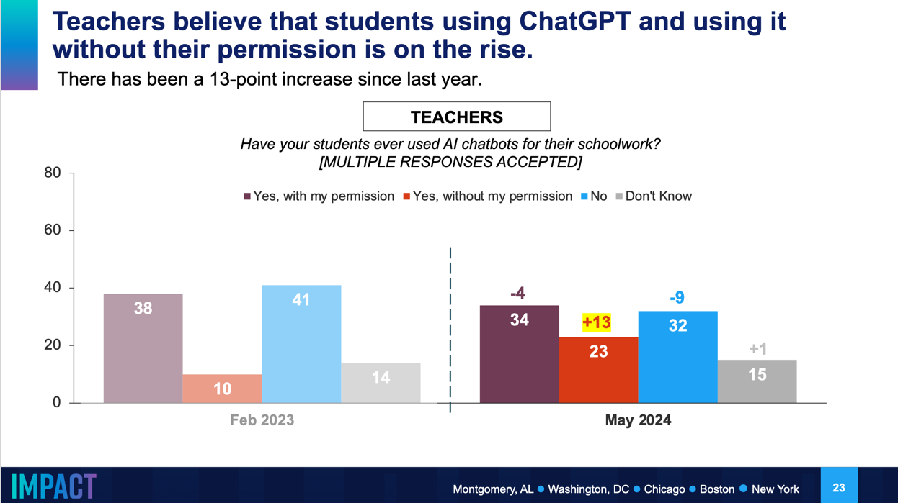
- 對那些會用AI聊天機器人的學生，「教師是否允許」影響不大
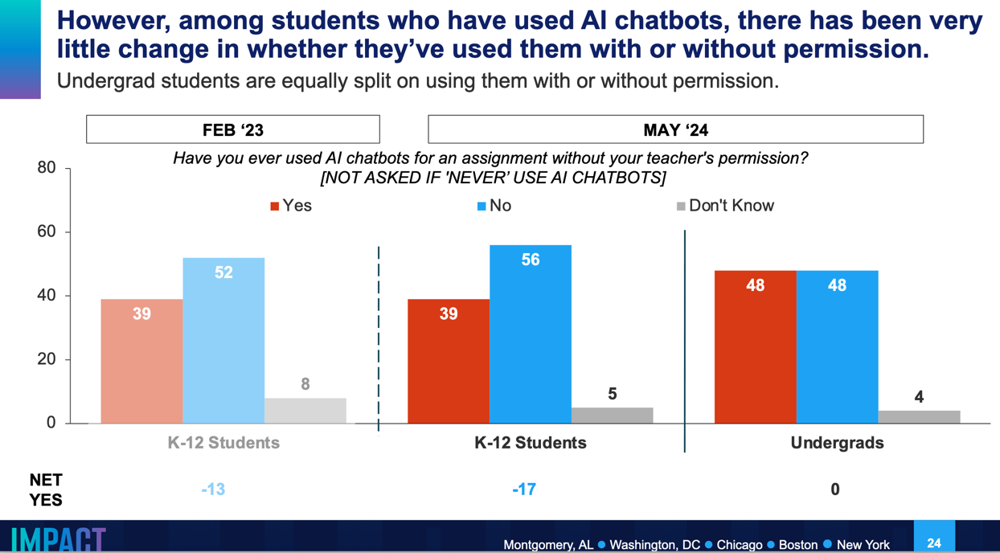
這讓我想起以前在師大讀書，有一門「英文論文寫作」的課，期末要寫一篇期末報告，教授要求不能使用Google，結果我跟我同學的電腦瀏覽器開滿了Google分頁，應該是被教授看到就直接當掉的那種…
- 七成的教師認為AI有助於協助教師的成長與學生的學習
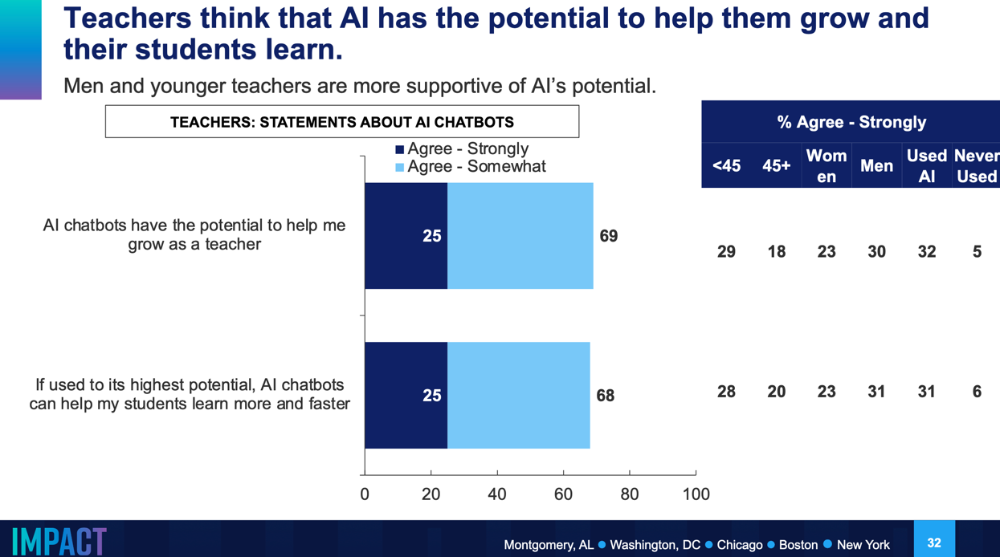
- 但多數的教師並未接受「使用AI的訓練」
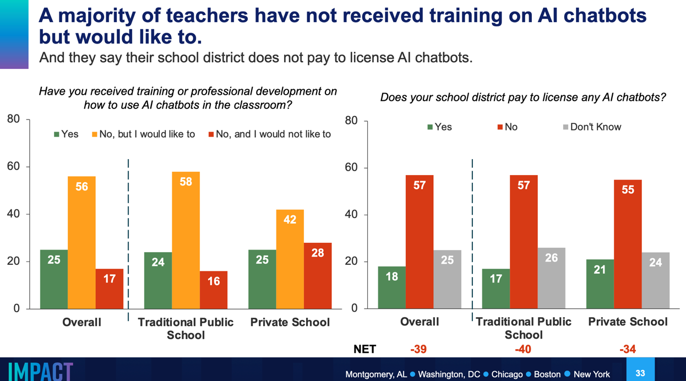
個人以為，教師所需要的，與其是個別工具的訓練，應該更需要AI融入學科的方法，這種方法需要精通AI知識與工具的專家和精通學科知識教學的教師一起探討，就如同我在這裡分享的，只能更深入去討論AI如何融入到我的教學中，因為我對其他領域畢竟過於陌生…..
6. 生成式AI的演變
6.1. 2022/11/30：ChatGPT 初始版本
基於GPT-3.5架構，OpenAI推出了ChatGPT的初始版本。這是一個對話式AI模型，能夠理解和生成類似人類的自然語言，回答各種問題並協助完成多種任務。
6.1.1. The time it took for various platforms to reach the 100 million user mark
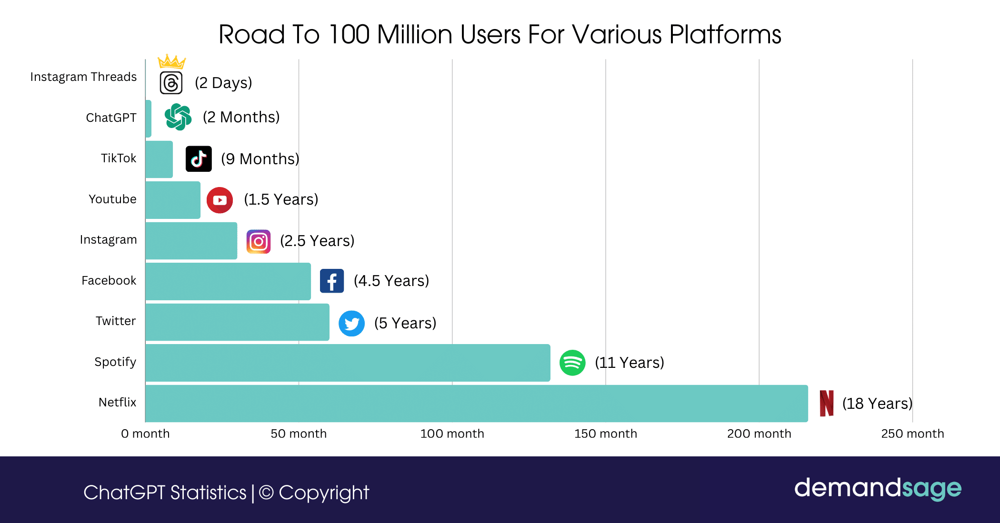
Figure 1: 不同平台達到一億使用者所花費時間#1
6.1.2. 我記憶中的聊天機器人: ELIZA
- 1966年，Joseph Weizenbaum在麻省理工學院開發了早期的聊天機器人ELIZA。ELIZA使用簡單的模式匹配和替換方法，模擬與人類的對話，最著名的是模仿羅傑斯心理療法的「醫生」腳本。雖然ELIZA並不具備真正的理解能力，但許多用戶在與其互動時產生了情感聯繫，甚至認為它具有人類智慧。這引發了對人類語言、人工智能以及我們如何感知機器的深入討論，揭示了人類傾向於將情感投射到機器上的現象。
Joseph Weizenbaum
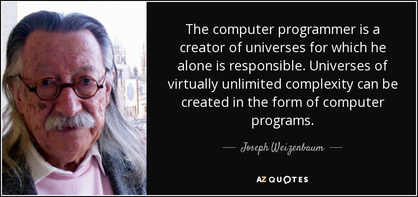
- web-based Eliza: https://web.njit.edu/~ronkowit/eliza.html
ELIZA
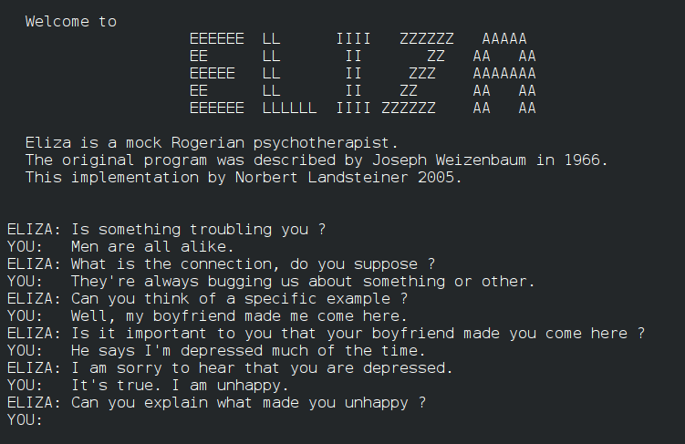
6.2. 接下來的變化
- 重點是生成，不是聊天
- ChatGPT 每年賺取約 13 億美元。
- 運行 ChatGPT 每天的成本為 700,000 美元，每個查詢的成本為 0.36 美元。
- 77% 的行銷人員使用 ChatGPT，但在保險領域只有 33%。
- OpenAI 的估值為 860 億美元。
6.2.1. 2023/02/01：ChatGPT Plus
OpenAI推出了付費訂閱服務ChatGPT Plus。訂閱者可享受更快速的響應時間、優先訪問新功能，以及在高流量時段的穩定服務。
6.2.2. 2023/02/07: MS將GPT-4模型結合到自家Bing搜尋引撉
6.2.3. 2023/0314: GPT-4 集成
ChatGPT升級整合了更先進的GPT-4模型。GPT-4具備更強的理解和推理能力，能處理更複雜的指令，提供更精確和詳盡的回應。
6.2.4. 2023/09/25: 多模態功能
ChatGPT開始支持語音和圖像輸入。用戶現在可以通過語音與ChatGPT對話，或上傳圖片讓模型進行分析和解釋，提升了互動性和實用性。
6.2.5. 2024/05/01: GPT-4o
能理解、生成文本、圖像等內容
- GPT-4o 發布時間與功能：於 2024 年 5 月 13 日推出，接受多模態輸入（文字、音訊、圖像、視訊）並產生相應的多模態輸出。
- 對用戶的提供：OpenAI 將 GPT-4o 提供給免費用戶，Plus 用戶則享有 5 倍的用量(免費用戶每三小時可以使用GPT-4o 16 次，而ChatGPT Plus 用戶則有80 次的使用上限)。
6.2.6. 2024/07/01: GPT-4o mini 發布
2024 年 6 月 18 日，OpenAI 推出了一款具成本效益的小型模型，名為 GPT-4o mini，旨在使 AI 技術更加經濟實惠，擴展其應用範圍(取代GPT-3.5)。功能：
- 支援文本和視覺 API
- 具備 128K 上下文窗口，支持每次請求最多 16K 的輸出token。
- 擁有至 2023 年 10 月的知識。
6.2.7. 2024/07/25: SearchGPT
可即時讀取網路資訊
6.2.8. 2024/09/12: o1-preview, o1-mini
- ChatGPT o1-preview 是一個較新的版本，相較於之前的 GPT-4o針對多模態交互性和效能優化。
- 多模態輸入的改進：
- o1-preview 提供了對多模態輸入（文本、圖像、音訊、視訊）更深入的理解能力，特別是在視覺和音訊的處理上，增強了對更複雜情境的分析。
- 具備更強大的 圖像和影片理解 功能，包括對圖像中的物體、場景和上下文的理解能力。它能提供更精確的圖像分析和生成解釋。
- o1-preview 提供了對多模態輸入（文本、圖像、音訊、視訊）更深入的理解能力，特別是在視覺和音訊的處理上，增強了對更複雜情境的分析。
- 上下文理解的擴展：
- o1-preview 在上下文理解和多回合對話方面比 GPT-4o 更加精細，能夠追踪更長的對話記錄，並保持更高的上下文一致性，讓對話過程更自然流暢。
- 支持更大的上下文窗口，允許使用者在一次對話中進行更深入的交談和探索。
- o1-preview 在上下文理解和多回合對話方面比 GPT-4o 更加精細，能夠追踪更長的對話記錄，並保持更高的上下文一致性，讓對話過程更自然流暢。
- 工具和插件支持：
- o1-preview 在工具整合方面增強了與外部插件和其他服務的互動能力，這包括與搜索引擎、計算工具以及資料庫的更好集成，使得 AI 能夠更容易地從外部資料源獲取信息來增強其回答。
- o1-preview 在工具整合方面增強了與外部插件和其他服務的互動能力，這包括與搜索引擎、計算工具以及資料庫的更好集成，使得 AI 能夠更容易地從外部資料源獲取信息來增強其回答。
6.2.9. 2024/10/03: ChatGPT-4 with Canvas
- 畫布視覺化交互：
ChatGPT-4 with Canvas 提供了一個類似白板的視覺化畫布，讓用戶可以自由地在畫布上進行圖形化操作。用戶可以以卡片或節點的形式組織問題、想法和 AI 回應，使得整個對話更加結構化，適合非線性的創作和知識探索。 - 非線性對話：
相較於傳統的聊天模式，畫布模式允許用戶在不同的節點之間移動，重啟先前的話題或對某個特定主題進行深入探討，這樣可以避免在長對話中迷失，並能有效地追踪思路的發展。 - 創意和腦力激盪：
畫布功能非常適合進行創意工作和腦力激盪，尤其是在涉及到多個概念或需要發散思維的情況下。用戶可以自由地將想法和 AI 的回答可視化，連接不同的點，從而幫助更好地探索和擴展創意。 - 跨模式整合：
ChatGPT-4 with Canvas 支持多模態的輸入，包括文本、圖片等。這意味著用戶可以在畫布上加入圖像，並讓 AI 對這些圖像進行解釋或生成相關內容。這種跨模式的整合提升了用戶與 AI 交互的靈活性和創造性。 - 更好的內容管理：
畫布上的每個對話節點都可以清楚地標示，使得用戶在長對話中可以更輕鬆地管理和組織不同的內容。這對於進行複雜問題的探討或需要保留對話記錄進行後續分析的情況尤其有幫助。 - 協作功能：
畫布模式還使得與他人協作更加方便，用戶可以與團隊成員共同操作畫布，分享創意或共同完成某些創作任務，這對於需要團隊合作的項目特別有利。 - 高效記錄與回顧：
用戶可以保存畫布中的各種節點和對話，這樣方便隨時回顧，並且在需要時可以隨時重新參考之前的內容，這對於長期項目或複雜知識的管理很有幫助。
7. 教學情境中的GAI工具
7.1. 文字生成 AI 工具（通用型）
若想用 AIGC 生成文字，最常使用的軟體有 ChatGPT、Claude、Gemini 和 Copilot，下面將分別介紹。
7.1.1. ChatGPT
- https://chatgpt.com/
- 收費版使用的是 GPT-4 模型
- 免費版則使用的是 GPT-3.5 模型
7.1.2. Claude
- https://claude.ai
- 免費版 Claud.ai: Claude 3.5 Sonnet
- 收費版 Claude Pro，使用Clause 3 Opus
- 目前也加入 Artifect 功能，讓 AI 在產生程式代碼的同時，也能於操作介面的右邊欄位預覽代碼執行後的成果。
7.1.3. Gemini
- https://gemini.google.com
- Gemini 是 Google 發佈的人工智慧聊天工具，過去的測試版命名為 Bard，現在已升級更名為 Gemini。
- 表格可以匯出到Google試算表
- 可要求Google對於生成內容進行查核
7.1.4. Bing
- https://copilot.microsoft.com/
- 基於 GPT-4 架構的對話式 AI 模型
- Microsoft Copilot: Bing, Office 365
- GitHub Copilot: VS code
7.2. 圖片生成 AI 工具
7.2.1. ChatGPT
7.2.2. Bing Image Creator
- https://www.bing.com/images/create
- Bing Image Creator是微軟搜尋引擎 Bing 的免費圖片生成技術，只要輸入需求圖片的指令，給予大略的視覺描述，大約30秒就能產生圖片，不喜歡還可以再次生成，讓 Image Creator 提案第二版。
例: 在電腦教室裡，一位高中教師正在利用生成式AI教授學生學習Python語言
7.2.3. Adobe Firefly
- https://firefly.adobe.com
- Adobe Express使用的生成AI
- Adobe Firefly 可以生成文字、圖片、填色，用 AI 和簡單的文字指令生成影像，自動生成後的圖片也可以再更新。Firefly 結合了大家常用的 Photoshop 修圖、繪圖功能，新增或移除物件，融入自己的創意。
例: 在電腦教室裡，一位高中教師正在利用生成式AI教授學生學習Python語言
7.2.4. Tensor Art
- https://tensor.art/
- Tensor Art 是能用 Stable Diffusion 模型進行 AI 繪圖的網頁，免費版一天約可以生成 100 張圖，並且可以高清下載。在調整長寬比、編輯細節及色彩上都非常自由，能輕鬆創個人化的藝術作品。
例: 在電腦教室裡，一位高中教師正在利用生成式AI教授學生學習Python語言
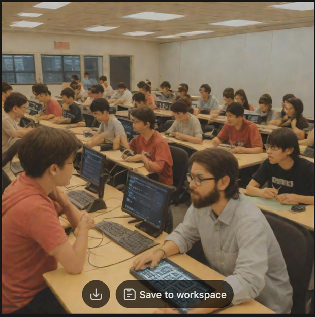
7.3. 影音生成 AI 工具
除了生成平面圖片，AIGC 的應用已擴展至動態音樂和影音內容的製作。下面介紹幾個非常實用的影音生成 AI 工具。
7.3.1. Suno AI
- https://suno.com/
- Suno AI是一款以人工智慧生成音樂的工具，可以用AI產出非常逼真的人聲與樂器聲，構成逼真的歌曲。依據據使用戶提供的文字，Suno AI 可以從指令中匹配合適的旋律、風格、人聲及節奏，創造出一首全新的歌曲。
7.3.2. Hedra AI
- https://www.hedra.com
- Hedra AI 是一款 AIGC 生成影片工具，能將靜態圖片轉換為流暢的影片，甚至可以搭配人聲，並精準對應人物的嘴形。透過 Hedra AI，過去的經典畫像、歷史照片，都有活靈或現、動起來的可能。
7.3.3. Vidnoz AI
- https://aiapp-tw.vidnoz.com
- Vidnoz AI 是一個生成式影片平台，點選 Vidnoz AI 網頁即可開始使用，透過 AI 指令生成專屬的特色影片。近年來除了生成動態影片，也運用 AIGC 延伸出更多素材，例如 AI 大頭照、AI 換臉、AI 換聲音等，並有全繁體中文介面，更豐富好用。
7.3.4. Pika
7.3.5. Genmo
7.4. 簡報生成 AI 工具
- https://gamma.app/
- Gamma 是運用AI，讓使用者一鍵生成簡報、網頁和文件的工具，過程中也能與聊天機器人進行對話、詢問，對焦出最符合需求的內容，節省大量製作簡報的時間。
- Gamma 內建大量的視覺模板、素材和套件，可以支援影音、音樂等，在生成簡報之後也能再微調修改，讓簡報有一定程度的美感，也能有符合口頭報告的素材。
7.5. 其他類型
7.5.1. Napkin.ai: 文字轉圖表
- https://www.napkin.ai/
- Napkin AI 提供了一種創新的方式來將文字內容轉化為視覺元素，使得理念的傳達變得更加迅速與直觀。用戶只需將文字粘貼到 Napkin 中，系統便能根據文字內容生成相關的視覺圖像，用戶可以選擇最能表達其想法的圖像進行進一步的個性化調整。
napkin
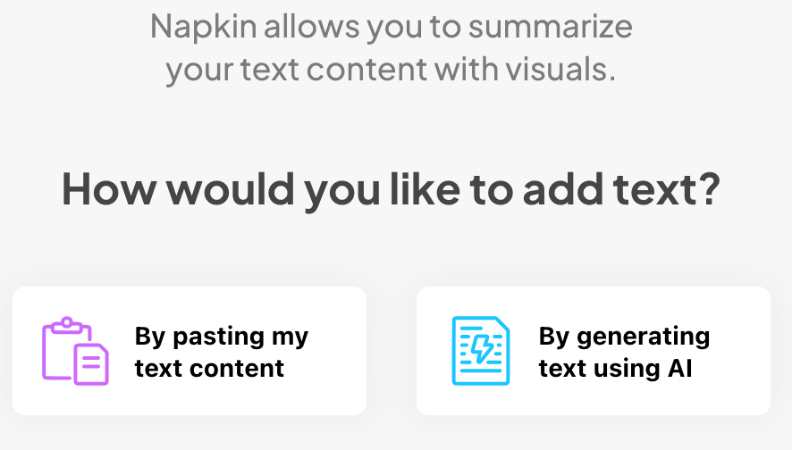
7.5.2. Whisper 語音轉文字
- Whisper Web
- Whisper Desktop for Windows: https://github.com/Const-me/Whisper
- Whisper Mate for macOS: https://whisper.marksdo.com/en
7.5.3. Mapify 心智圖
- Mapify(Chatmind): https://mapify.so/tc/app/new
7.5.4. AI筆記工具
- notebook lm: https://www.youtube.com/watch?v=T91QkwJ_Obo
內建Gemini Pro, 適合學生整理、製作筆記工具5
- 匯入文章: 由AI來建議針對該篇文章所需問的問題，可以做課前預習
- 可以同時摘要多篇文章，適合學生寫小論文的文獻探討
- 可以提供FAQ，適合學生在看完課文後練習作答，也適合教師拿來做出題參考
7.5.5. 程式生成
- ChatGPT: https://chatgpt.com/
Footnotes:
Miao, F., & Shiohira, K. (2022). K-12 AI curricula. A mapping of government-endorsed AI curricula. In: UNESCO.https://unesdoc.unesco.org/ark:/48223/pf0000380602.